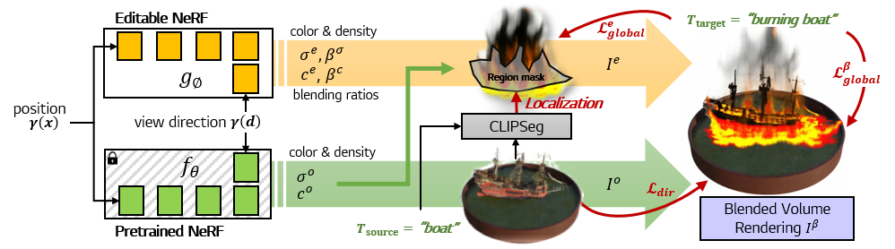
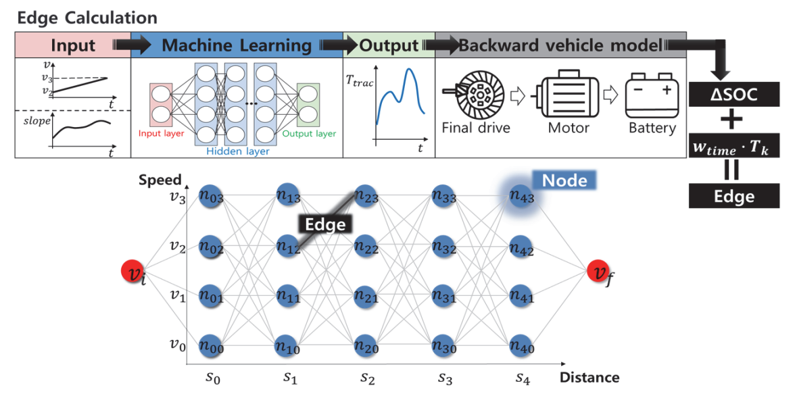

|
I'm a research scientist at LG Electronics, where I'm a member of Generative AI team. I received B.S. and M.S degrees in automotive engineering at Hanyang University in 2020 and 2022, respectively. During my Master’s program I studied vehicle control, perception and path prediction using deep learning, where I was advised by Prof. Kunsoo Huh. My research interests are in computer vision and generative AI, particularly interested in 2D/3D content generation and manipulation with diffusion models, Neural Radiance Fields (NeRF), etc. |

|
|

|
Hyeonseop Song*, Seokhun Choi*, Hoseok Do, Chul Lee, Taehyeong Kim *Equal contribution ICCV, 2023 - ArXiv / Project / Video Blending-NeRF performs localized 3D editing to a source object by text prompts with explicitly predefined three types of editing operations: color change, density addition, and density removal. |
|  |
Byunggun Kim, Gihoon Kim, Yoonyong Ahn, Jihoon Sung, Seokhun Choi, Youngho Jun, Kunsoo Huh Transactions of the Korean Society of Automotive Engineers, 2022 - Paper We propose vehicle speed optimization method using network that predicts traction torque, which trained with real-world vehicle driving data. |
|
Source code for this page was taken from Jon Barron's website. |